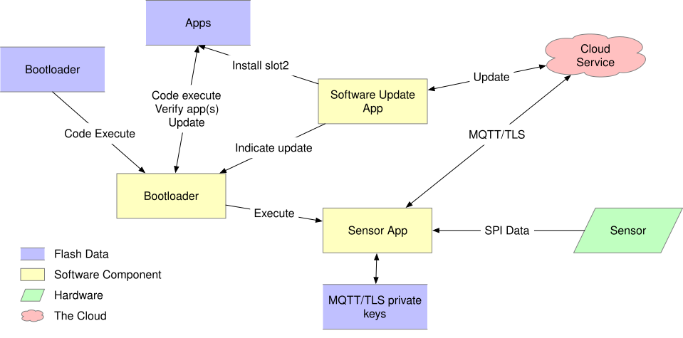

Sensor Device Threat Model
This document describes a threat model for an IoT sensor device. Spelling out a threat model helps direct development effort, and can be used to help prioritize these efforts as well.
This device contains a sensor of some type (for example temperature, or a pressure in a pipe), which sends this data to an SoC running a microcontroller. This microcontroller connects to a cloud service, and relays this sensor data to this service. The cloud service is also able to send configuration data to the device, as well as software update images. A general diagram can be seen in Figure 1:

Figure 1. Sensor General Diagram
In this sensor device, the sensor connects with the SoC via an SPI bus, and the SoC has a network interface that it uses to communicate with the cloud service. The particulars of these interfaces can impact the threat model in unexpected ways, and variants on this will need to be considered (for example, using a separate network interface SoC connected via some type of bus).
This model also focuses on communicating via the MQTT-over-TLS protocol, as this seems to be in wide use [1].
Assets
One aspect of the threat model to consider are assets involved in the operation of the device. The following list enumerates the assets included in this model:
The bootloader. This is a small code/data image contained in on-device flash that is the first code to run. In order to establish a root of trust, this image must be immutable. This model assumes that the SoC provides a mechanism to protect a region of the flash from future writes, and that this will be done after this image is programmed into the device, early in production [th-imboot].
The application firmware image. This asset consists of the remainder of the firmware run by the microcontroller. The distinction is made because this part of the image will need to be updated periodically as security vulnerabilities are discovered. Requirements for updates to this image are:
The image shall only be replaced with an authorized image [th-authrepl].
When an authorized replacement image is available, the update shall be done in a timely manner [th-timely-update].
The image update shall be seen as atomic, meaning that when the image is run, the flash shall contain either the update image in its entirety, or the old image in its entirety [th-atomic-update].
Root certificate list. In order to authenticate the cloud service (server), the IoT device must have a list of root certificates that are allowed to sign the certificate on the server. For cloud-provider based services, this list will generally be provided by the service provider. Because the root certificates can expire, and possibly be revoked, this list will need to be periodically updated [th-root-certs], [th-root-check].
Client secrets. To authenticate the client to the service, the client must possess some kind of secret. This is generally a private key, usually either an RSA key or an EC private key. When establishing communication with the server, the device will use this secret either as part of the TLS establishment, or to sign a message used in the communication.
This secret is generally generated by the service provider, or by software running elsewhere, and must be securely installed on the device. Policy may dictate that this secret be replaced periodically, which will require a way to update the client secret. Typically, the service will allow two or three active keys to allow this update to proceed while the old key is used.
These secrets must be protected from read, and the smallest amount of code necessary shall have access to them. [th-secret-storage]
Current date/time. TLS certificate verification requires knowledge of the current date and time in order to determine if the current time falls within the certificate’s current validity time. Also, token based client authentication will generally require the client to sign a message containing a time window that the token is valid. Certificate validation requires the device’s notion of date and time to be accurate within a day or so. Token generation generally requires the time to be accurate within 5-10 minutes.
It may be possible to approximate secure time by querying an external time server. Secure NTP is possibly beyond the capabilities of an IoT device. The main risks of having incorrect time are denial of service (the device rejects valid certificates), and the generation of tokens with invalid times. It could be possible to trick the device into generating tokens that are valid in the future, but the attacker would also have to spoof the server’s certificate to be able to intercept this. [th-time]
Sensor data. The data received from the sensor itself, and delivered to the service shall be delivered without modification or tampering.
Device configuration. Various configuration data, such as the hostname of the service to connect to, the address of a time server, frequency and parameters of when sensor data is sent to the service, and other need to be kept by the device. This configuration data will need to be updated periodically as the configuration changes. Updates should be allowed only from authorized parties. [th-conf]
Logs. In order to assist with analysis of security issues, the device shall log information about security-pertinent events. IoT devices generally have limited storage, and as such, these logs need to be carefully selected. It may also be possible to send these log events to the cloud service where they can be stored in a more resource-available environment. Types of events that should be logged include:
Firmware image updates. The system should log the download of new images, and when an image is successfully updated.
Client secret changes. Changes and new client secrets should be logged.
Changes to the device configuration.
Communication
In addition to assets, the threat model also considers the locations where data or assets are communicated between entities of the system.
Flash contents. The flash device contains several regions. The contents of flash can be modified programmatically by the SoC’s CPU.
The bootloader. As described in the Assets section, the bootloader is a small section of the flash device containing the code initially run. This section shall be written early in the lifecycle of the device, and the flash device then configured to permanently disallow modification of this section. This configuration should also prevent modification via external interfaces, such as JTAG or SWD debuggers.
The bootloader is responsible for verifying the signature of the application image as well as updating the application image from the update image when an update is needed.
The bootloader shall verify the signature of the update image before installing it.
The bootloader shall only accept an update image with a newer version number than the current image.
The application image. The application image contains the code executed during normal operation of the device. Before running this image, the bootloader shall verify a digital signature of the image, to avoid running an image that has been tampered with. The flash/system shall be configured such that after the bootloader has completed, the CPU will be unable to write to the application image.
The update image. This is an area of flash that holds a new version of the application image. This image will be downloaded and stored by the application during normal operation. When this has completed, the application can trigger a reboot, and the bootloader can install the new image.
Secret storage. An area of the flash will be used to store client secrets. This area is written and read by a subset of the application image. The application shall be configured to protect this area from both reads and writes by code that does not need to have access to it, giving consideration to possible exploits found within a majority of the application code. Revealing the contents of the secrets would allow the attacker to spoof this device.
Initial secrets shall be placed in the device during a provisioning activity, distinct from normal operation of the device. Later updates can be made under the direction of communication received over a secured channel to the service.
Configuration storage. There shall be an area to store other configuration information. On resource-constrained devices, it is allowed for this to be stored in the same region as the secret storage, however, this adds additional code that has access to the secret storage area, and as such, more code that must be scrutinized.
Log storage. The device may have an area of flash where log events can be written.
Sensor/Actuator interface. In this design, the sensor or actuator communicates with the SoC via a bus, such as SPI. The hardware design shall be made to make intercepting this bus difficult for an attack. Required techniques depend on the sensitivity and use of the sensor data, and can range from having the sensor mounted on the same PCB as the MCU to epoxy potting the entire device.
Communication with cloud service. Communication between the device, and the cloud service will be done over the general internet. As such, it shall be assumed that an attacker can arbitrarily intercept this channel and, for example, return spoofed DNS results or attempt man-in-the-middle attacks against communication with cloud services.
The device shall use TLS for all communication with the cloud service [th-all-tls]. The TLS stack shall be configured to use only cipher suites that are generally considered secure [2], including forward secrecy. The communication shall be secured by the following:
Cipher suite selection. The device shall only allow communication with generally agreed secure cipher suites [th-tls-ciphers].
Server certificate verification. The server presented by the server shall be verified [th-root-check].
Naming. The certificate shall name the host and service the cloud service server is providing. RFC 6125 describes best practices for this. It is permissible for the device to require the certificate to be more restrictive than as described in this RFC, provided the service can use a certificate that can comply.
Path validation. The device shall verify that the certificate chain has a valid signature path from a root certificate contained within the device, to the certificate presented by the service. RFC 4158 describes this in general. The device is permitted to require a more restricted path, provided the server certificate used complies with this restriction.
Validity period. The validity period of all presented certificates shall be checked against the device’s best notion of the current time.
Client authentication. The client shall authenticate itself to the service using a secret known only to that particular device. There are several options, and the technique used is generally mandated by the particular service provider being used [th-tls-client-auth].
TLS client certificates. The TLS protocol allows the client to present a certificate, and assert its knowledge of the secret described by that certificate. Generally, these certificates will be stored within the service provider. These certificates can be self-signed, or signed by a CA. Since the service provider maintains a list of valid certificates (mapping them to a device identity), having these certificates signed by a CA does not add any additional security, but may be useful in the management of these certificates.
Token-based authentication. It is also possible for the client to authenticate itself using the password field of the MQTT CONNECT packet. However, the secret itself must not be transmitted in this packet. Instead, a token-based protocol, such as RFC 7519’s JSON Web Token (JWT) can be used. These tokens will generally have a small validity period (e.g. 1 hour), to prevent them from being reused if they are intercepted. The token shall not be sent until the device has verified the identity of the server.
Random/Entropy source. Cryptographic communication requires the generation of secure pseudorandom numbers. The device shall use a modern, accepted cryptographic random-bit generator to generate these random numbers. It shall use either a Non-Deterministic Random Bit Generator (True RBG) implemented in hardware within the SoC, or a Deterministic Random Bit Generator (Pseudo RBG) seeded by an entropy source within the SoC. Please see NIST SP 800-90A for information on approved RBGs and NIST SP 800-90B for information on testing a device’s entropy source [th-entropy].
Communication with the time service. Ideally, the device shall contain hardware that maintains a secure time. However, most SoCs in use do not have support for this, and it will be necessary to consult an external time service. RFC 4330 and referenced RFCs describe the Simple Network Time Protocol that can be used to query the current time from a network time server.
Device lifecycle. An IoT device will have a lifecycle from production to destruction and disposal of the device. Aspects of this lifecycle that impact security include initial provisioning, normal operation, re-provisioning, and destruction.
Initial provisioning. During the initial provisioning stage, it is necessary to program the bootloader, an initial application image, a device secret, and initial configuration data [th-initial-provision]. In addition, the bootloader flash protection shall be installed. Of this information, only the device secret needs to differ per device. This secret shall be securely maintained, and destroyed in all locations outside of the device once it has been programmed [th-initial-secret].
Normal operation. Normal operation includes the behavior described by the rest of this document.
Re-provisioning. Sometimes it is necessary to re-provision a device, such as for a different application. One way to do this is to keep the same device secret, and replace the configuration data, as well as the cloud service data associated with the device. It is also possible to program a new device secret, but if this is done it shall be done securely, and the new secret destroyed externally once programmed into the device [th-reprovision].
Destruction. To prevent the device secret from being used to spoof the device, upon decommissioning, the secret for a particular device shall be rendered ineffective [th-destruction]. Possibilities include:
Hardware destruction of the device.
Securely wiping the flash area containing the secret [3].
Removing the device identity and certificate from the service.
Other Considerations
In addition to the above, network connected devices generally will need a way to configure them to connect to the network environment they are placed in. There are numerous ways of doing this, and it is important for these configuration methods to not circumvent the security requirements described above.
Threats
Must boot with an immutable bootloader.
Application image shall only be replaced with an authorized image.
Application updates shall be done in a timely manner.
Application updates shall be atomic.
TLS must have a list of trusted root certificates.
There must be a mechanism to securely store client secrets. The least amount of code necessary shall have access to these secrets.
System must have moderately accurate notion of the current date/time.
The system must receive, and keep configuration data.
The system must log security-related events, and either store them locally, or send to a service.
All communications with the cloud service shall use TLS.
TLS shall be configured to allow only generally agreed cipher suites (including forward secrecy).
The device shall authenticate itself with the cloud provider using one of the methods described.
The TLS layer shall use a modern, accepted cryptographic random-bit generator seeded by an entropy source within the SoC.
The device shall have a per-device secret loaded before deployment.
The initial secret shall be securely maintained, and destroyed in any external location as soon as the device is provisioned.
Reprovisioning a device shall be done securely.
Upon decommissioning, the device secret shall be rendered ineffective.